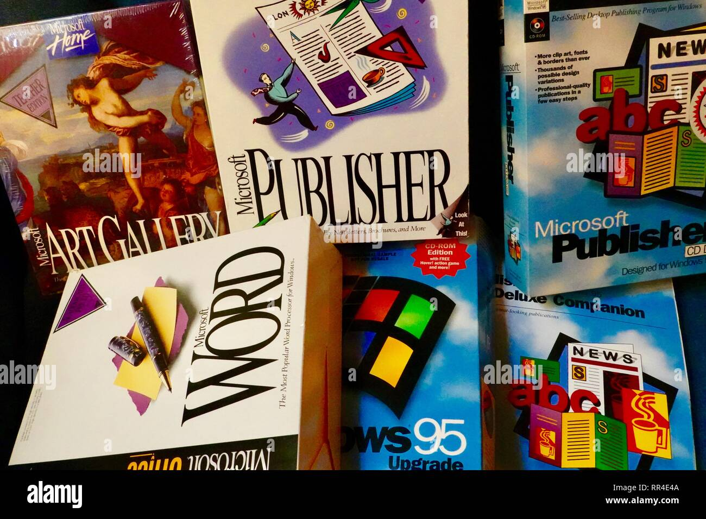
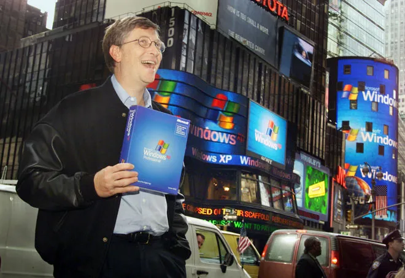

Microsoft was founded on April 4th 1975 in Alberquerque, New Mexico. The comapny was growing into the
behemoth it would become in the 1990s-present day by making strategic business moves during the 1900s. The comapny
suppy the operating system for IBM in a licensed agreement instead of [IBM] buying Microsoft. The debuys of Microsoft
Word, Windows 1.0, and IPO increased their control of the software/tech market and business growth. Also, Bill Gates and
Steve Jobs had a meeting during the Macintosh Project where Jobs showcased the different tech/applications that both companies
would collaberate on. However, the GUI presented problems where both were arguing about who stole what when developing their own
GUI.

Microsoft Products 90s
Microsoft 90s
During the 1990's Microsoft started to become the mega corporation it is today by exploding the PC market.
This was achieved by releasing a solid operating system called, Windows 95. Which introduced various features and support that
was enhanced with other debuts. Microsoft's browser, Internet Explorer, was introduced, and Microsoft Office
saw massive improvements and integration that dominated offices and households across the globe.

Bill Gates Times Square
Microsoft 2000s
During the 1990's Microsoft started to become the mega corporation it is today by exploding the PC market.
During the 1990's Microsoft started to become the mega corporation it is today by exploding the PC market.
This was achieved by releasing a solid operating system called, Windows 95. Which introduced various features and support that
was enhanced with other debuts. Microsoft's browser, Internet Explorer, was introduced, and Microsoft Office
saw massive improvements and integration that dominated offices and households across the globe.